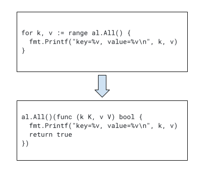

Go 1.23 shipped with a new major feature: ranging over functions (also known as "iterators"), per this proposal. This feature is nicely covered in the official Go blog post from August.
This article is a rewrite of my older post that described this feature when it was still in preview. The feature was slightly different then, and I want a post that reflects the accepted and final state of affairs. The full code for this article is available in the accompanying repository.
Background - original for-range statements
All Go programmers know and love the venerable for ... := range loop; whether it's ranging over elements of a slice, runes of a string, or key/value pairs of a map - it's a versatile tool, and few programs do without it.
for i, elem := range mySlice {
// use index i or element elem somehow
}
However, so far for-range statements have been limited to a relatively small number of Go constructs: arrays, slices, strings, maps and channels.
Ranging over int
The first addition made in the proposal is range over integers. Here's a basic example of how it looks:
for i := range 5 {
fmt.Println(i)
}
This code is exactly equivalent to:
for i := 0; i < 5; i++ {
fmt.Println(i)
}
And will do the same thing: print out the numbers 0,1,2,3,4 - each on a separate line. Obviously, the ranged integer does not have to be a constant and assigning the range to a per-iteration value is optional:
for range n {
// do something
}
Will do something exactly n times. That's really all there is to it! This is just a clean shortcut for a very common loop (i := 0; i < n; i++). In the proposal, Russ mentioned that approximately half of the 3-clause for loops he observed in the wild can be converted to this "range over int" form. This includes Go benchmarks, where the main loop can be converted to:
for range b.N {
// run the benchmarked code
}
Ranging over integers is simple and clear, so I won't spend more time on it. Let's move on to the more significant change - ranging over functions.
Range over functions - motivation
Since Go's addition of generics in version 1.18, people started writing generic containers or Abstract Data Structures; generics make it possible for programmers to decouple the data structure from the types it stores in an efficient and convenient way (compared to the older way of using empty interfaces).
However, one nagging issue for custom containers remained: how do you iterate over their elements? While Go supports iteration over built-in containers like slices and maps very naturally with a for-range loop, this utility was not available for custom containers, so programmers had to come up with ad-hoc iteration methods... until now.
For a concrete motivating example, let's assume that Lisp programmers were right all along and association lists are the best data structure (TM). Using generics, we can implement a simple assoc list in Go, built on top of a slice [1]:
type AssocList[K comparable, V any] struct {
lst []pair[K, V]
}
type pair[K comparable, V any] struct {
key K
value V
}
func (al *AssocList[K, V]) Add(key K, value V) {
al.lst = append(al.lst, pair[K, V]{key, value})
}
I'll leave the "lookup" method as an exercise for motivated readers. We can create an association list and populate it:
al := &AssocList[int, string]{}
al.Add(10, "ten")
al.Add(20, "twenty")
al.Add(5, "five")
With this data structure in hand, an obvious question arises - how do I iterate over all its elements? We could cheat and range over the underlying slice, but this requires exposing an implementation detail -- what if we want to re-implement assoc lists without slices later?
We're left with devising a custom iteration API; something like a Next() method. This is what Go programmers have been doing so far, and you can find many examples of custom iteration APIs across the standard library and elsewhere. As you would expect, many different approaches emerged. Starting with Go 1.23, we can finally settle on a single, idiomatic approach.
I'm going to show how to use the Go 1.23 range-over-functions feature to write an iterator for AssocList; the next section will discuss the mechanics of how it works. We start by adding a method to AssocList with a special signature; it can also be a free-standing function, but for a container like AssocList, a method is natural:
func (al *AssocList[K, V]) All() iter.Seq2[K, V] {
return func(yield func(K, V) bool) {
for _, p := range al.lst {
if !yield(p.key, p.value) {
return
}
}
}
}
Where Seq2 is a helper type defined in the new iter package in the standard library:
type Seq[V any] func(yield func(V) bool)
type Seq2[K, V any] func(yield func(K, V) bool)
We can use the new All method as follows:
func main() {
al := &AssocList[int, string]{}
al.Add(10, "ten")
al.Add(20, "twenty")
al.Add(5, "five")
for k, v := range al.All() {
fmt.Printf("key=%v, value=%v\n", k, v)
}
}
// Prints:
//
// key=10, value=ten
// key=20, value=twenty
// key=5, value=five
Magic! We just iterate over our container with a standard for-range loop; how does it work?
Range over functions - the mechanics
First, note that All is a method that returns a function. To be eligible for for-range iteration, a value has to be a function with one of these signatures:
func(yield func() bool)
func(yield func(V) bool)
func(yield func(K, V) bool)
Each is a function that takes another function as parameter. The function parameter is named yield by convention - the name itself has no significance. yield can have 0, 1, or 2 parameters and returns a bool.
The number of yield's parameters is directly mapped to the left-hand side of the for-range loop w.r.t maximal number of returned values, e.g. [2]:
for x, y := range ... // two parameters
for x := range ... // one parameter
for range ... // no parameters
With the new iteration functionality, the for-range loop over functions will be automatically transformed by the compiler. Quoting from the proposal:
For a function f, the iteration proceeds by calling f with a synthesized yield function that invokes the body of the loop. The values produced correspond to the arguments in successive calls to yield. As with range over other types, it is permitted to declare fewer iteration variables than there are iteration values. The return value from the yield function reports whether f should continue iterating. For example, if the loop body executes a break statement, the corresponding call to yield returns false.
Let’s unpack this, using our AssocList iterator as an example. Here's the transformation:
Now looking into the definition of AssocList.All, it's clear how the iteration works. The loop in this method iterates over the items in the data structure, passing each into the supplied yield function, which the compiler substitutes for the body of the original range loop.
This is the simplest example, because it doesn't change the control flow in any way. In more complex cases the compiler applies more sophisticated transformations; for example, a break in the for-range loop body is transformed into a return false from the yield function, directing iteration to stop. A continue is transformed into an early return true; more work is needed for goto statements, early returns, panics, defers and so on. For the gory details, take a look at the transformation implementing the proposal.
Stopping iteration early
Early stops are an essential feature of the range over functions proposal. Recall our AssocList.All method:
func (al *AssocList[K, V]) All() iter.Seq2[K, V] {
return func(yield func(K, V) bool) {
for _, p := range al.lst {
if !yield(p.key, p.value) {
return
}
}
}
}
Checking for a false return from yield and using that to return early is important, because this is the invoking for-range loop telling us to stop. Consider this loop:
for k, v := range al.All() {
if strings.HasPrefix(v, "fi") {
fmt.Println("found bad value, aborting!")
break
}
fmt.Printf("key=%v, value=%v\n", k, v)
}
As mentioned earlier, the break is transformed into return false when the body of this loop is transformed into the yield function. Once we've encountered a "bad value", we don't want to continue iterating, and therefore the iterator function has to exit early, too.
This is very important because iteration may be costly, have side effects (it could be reading I/O devices, for example), or because the iterator isn't even finite.
Iterating over "all" Fibonacci numbers
As an example of an infinite iterator, let's write one for Fibonacci numbers:
func genFib() iter.Seq[int] {
return func(yield func(int) bool) {
a, b := 1, 1
for {
if !yield(a) {
return
}
a, b = b, a+b
}
}
}
This function returns iter.Seq because the iteration happens over single values (unlike the pairs passed to yield by our assoc list iterator). This means the associated for-range loop will yield at most a single value. Here's how we can use it:
func main() {
for p := range genFib() {
fmt.Println(p)
if p > 1000 {
break
}
}
}
This will print Fibonacci numbers until (and including) the first one over 1000. Clearly, there is no "end" to such an iterator; there are infinitely many Fibonacci numbers. In fact, the for loop in the function returned by genFib doesn't even have an end condition; it only exits when yield returns false. This happens when the break statement from the if p > 1000 condition is triggered.
Recursive iterators
So far the iterator examples have all been linear: the iterator had a single loop that yields all the values one by one. Some iteration patterns are not linear, however; for example, consider iterating over a binary tree:
type Tree[E any] struct {
val E
left, right *Tree[E]
}
func (t *Tree[E]) Inorder() iter.Seq[E] {
return func(yield func(E) bool) {
t.push(yield)
}
}
func (t *Tree[E]) push(yield func(E) bool) bool {
if t == nil {
return true
}
return t.left.push(yield) && yield(t.val) && t.right.push(yield)
}
Note that there's no loop here - the iteration is done by means of recursion instead. This code uses a recursive helper method -- push. We need a helper method here because we want push to return a boolean; this boolean indicates whether iteration should stop and propagates it up the recursion stack. It only stops if yield returns false on some value.
Here's the in-order tree iterator in action:
// Create a sample tree:
//
// 10
// / \
// 20 40
// / \
// 30 39
tt := &Tree[int]{
10,
&Tree[int]{
20,
&Tree[int]{30, nil, nil},
&Tree[int]{39, nil, nil}},
&Tree[int]{40, nil, nil},
}
for v := range tt.Inorder() {
fmt.Println(v)
}
// Prints:
// 30
// 20
// 39
// 10
// 40
Additional iteration examples
bufio.Scanner is a useful type for iterating over lines in text; it can also be used to work with other separators, but let's just talk about newline-separated lines for simplicity.
The canonical way of iterating over all lines in the input is:
scanner := bufio.NewScanner(os.Stdin)
for scanner.Scan() {
fmt.Println(scanner.Text())
}
if err := scanner.Err(); err != nil {
fmt.Fprintln(os.Stderr, "reading standard input:", err)
}
This is a great example of an ad-hoc iteration method the designers of Go came up with, before the language had real iterator support. There's nothing wrong with this approach - it's clear and it works well. However, without a standard for iteration, multiple approaches emerge and one always has to consult the documentation for the right way to do this.
With the new range-over-functions feature, we can write an iterator that works in a for-range loop. I'll wrap Scanner to demonstrate this without modifying the standard library:
type myScanner struct {
s *bufio.Scanner
}
func newScanner(r io.Reader) *myScanner {
s := bufio.NewScanner(r)
return &myScanner{
s: s,
}
}
func (ms *myScanner) All() iter.Seq[string] {
return func(yield func(string) bool) {
for ms.s.Scan() {
if !yield(ms.s.Text()) {
return
}
}
}
}
func (ms *myScanner) Err() error {
return ms.s.Err()
}
And we can use it as follows:
scanner := newScanner(os.Stdin)
for line := range scanner.All() {
fmt.Println("got line:", line)
}
if err := scanner.Err(); err != nil {
log.Fatalf("reading stdin: %v", err)
}
One could envision an All method being added to the actual Scanner type at some point in the future.
Another example that I like is the Backward function for slices. It shows that a free-standing function can also return an iterator, and that it can use a parameter to define the iteration:
func Backward[E any](x []E) iter.Seq2[int, E] {
return func(yield func(int, E) bool) {
i := len(x) - 1
for i >= 0 && yield(i, x[i]) {
i--
}
}
}
Usage:
func main() {
s := []int{5, 6, 7, 8, 11, 22}
for _, e := range Backward(s) {
fmt.Println(e)
}
}
// Prints:
// 22
// 11
// 8
// 7
// 6
// 5
You don't have to write your own Backward function though - it's already been added to the standard slices package, along with some other useful iterator functions (search the documentation for iter.Seq).
Final words - push vs. pull iterators
I like this new feature - it improves the ergonomics of Go programming with only minimal added complexity [3]. I started putting together a small collection of generic Go data structures, and most of the packages there now implement iterators.
Finally, if you read the proposal and other documents related to it, you'll quickly run into "push" vs. "pull" iterators; what do these terms mean?
Simply put, "push" iterators push their values into a function given to them; the iterators in this proposal and the examples in this post are therefore all push iterators - they take a yield function and generate values by invoking it; yield's return value is then used to determine whether the iterator should continue generating values, or else stop.
"Pull" iterators work somewhat differently; a pull iterator is a function you can invoke multiple times and its signature is something like:
func() (value T, cont bool)
Where value is the generated value and cont says if the iterator is ready to produce more values, or else is done.
The control flow around push vs. pull iterators is very different. Push iterators "drive" the iteration process, feeding values into a function until they're done or explicitly asked to stop. Pull iterators, on the other hand, are driven from elsewhere and have to retain state between calls. Both kinds of iterators are useful for different patterns.
The Go blog post has an example of pull-based iteration, and Russ's coro blog post goes into more details.
An iter.Pull function for converting from push to pull iterators has also been added to the standard library. I may write more about pull iterators separately.
| [1] | As an exercise, if you want to feel like a real Lisp hacker, feel free to implement it using a proper linked list. |
| [2] | Note that I'm saying maximal number of returned values. Even if our yield takes two values, we can still iterate with for x := range and only the first value fed to yield will be assigned to x. This is just like iterating over regular maps, where the for k, v := range form obtains both keys and values, but the for k := range form is valid as well - for iterating just over keys. |
| [3] | At least user-observable complexity. The implementation of the proposal is rather involved in order to handle all forms of control flow properly. |